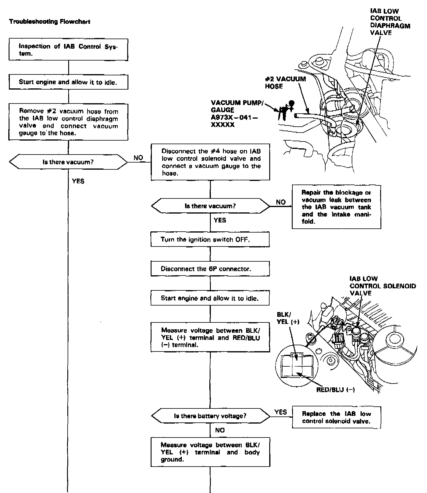
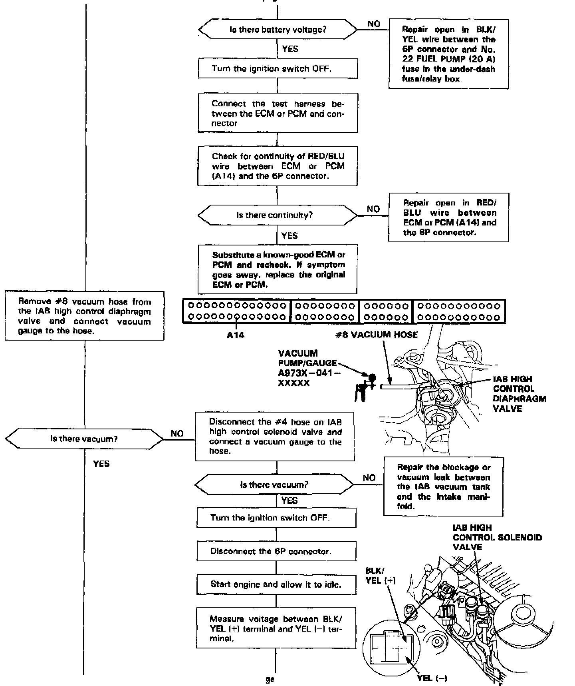
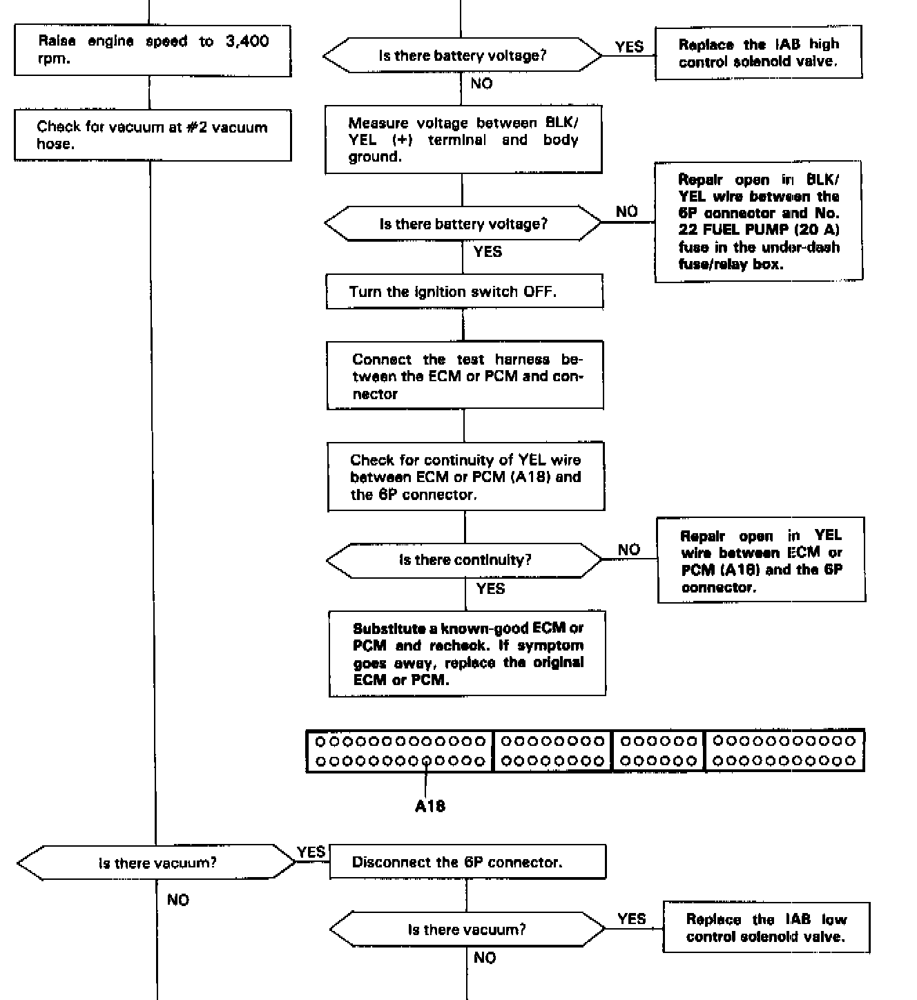
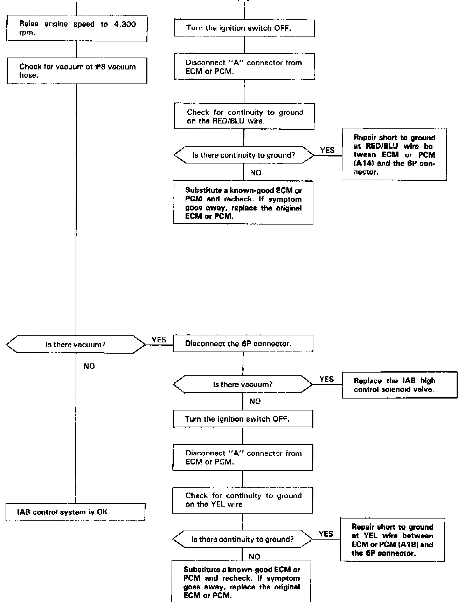

Operation CHARM
: Car repair manuals for everyone.
Home
>>
Acura
>>
1993
>>
Legend Coupe V6-3206cc 3.2L SOHC FI
>>
Repair and Diagnosis
>>
Powertrain Management
>>
Fuel Delivery and Air Induction
>>
Variable Induction System
>>
Testing and Inspection
Variable Induction System: Testing and Inspection
INTAKE AIR
BYPASS CONTROL SYSTEM

PART 1 OF 4

PART 2 OF 4

PART 3 OF 4

PART 4 OF 4